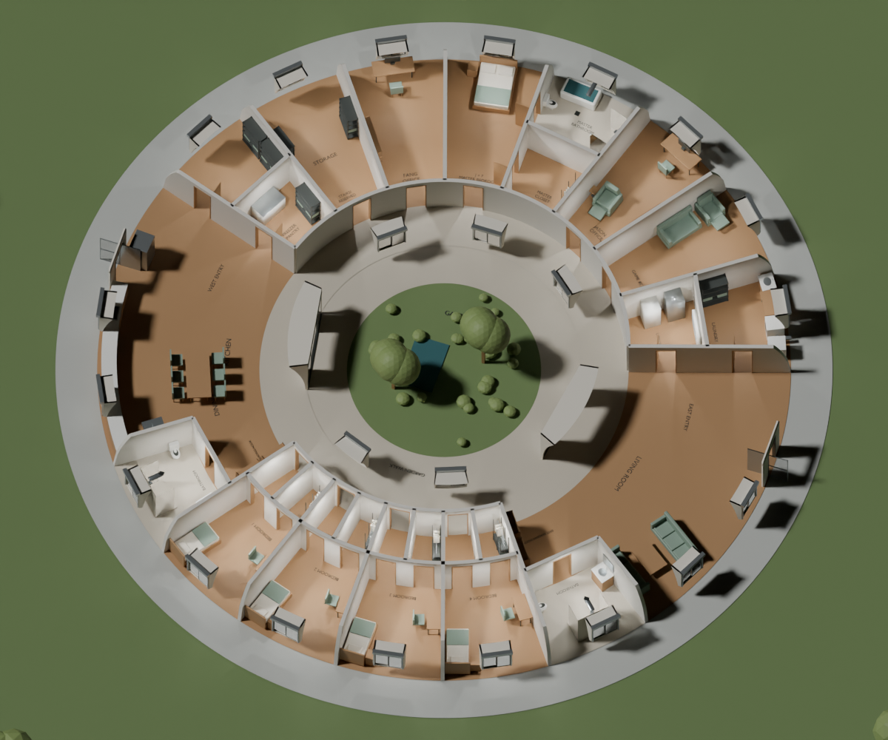
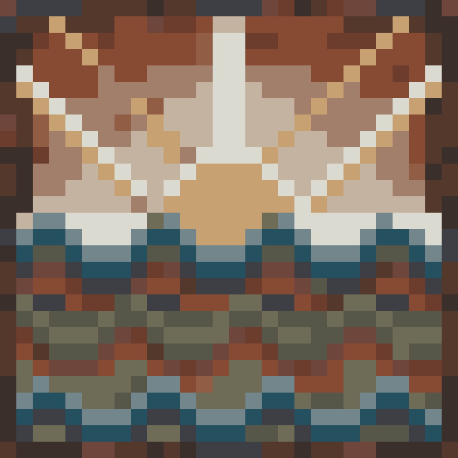
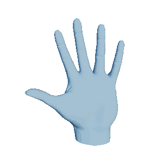

Explore three worlds ↗INTERACTIVE WORLDS · 2026
Places and Spaces
Explore the Torus Home, an O’Neill cylinder, or the home inside its larger world.

Explore three worlds ↗INTERACTIVE WORLDS · 2026
Explore the Torus Home, an O’Neill cylinder, or the home inside its larger world.

Create a mosaic ↗CREATIVE TOOL · 2026
Create, shuffle, and share colorful 28 × 28 mosaics.
Open the mosaic ↗
Explore gestures ↗HAND GESTURE ENCYCLOPEDIA · 2026
Explore hand gestures, discover their meanings, and practice them in your browser.
Browse the encyclopedia ↗CHINESE CHARACTER PLAY · 2026
Take Chinese characters apart, explore their pieces, and put them back together.
Play the prototype ↗ENGINEERING EXPERIENCE
An overview of engineering experience, research, and selected projects.
View the resume ↗